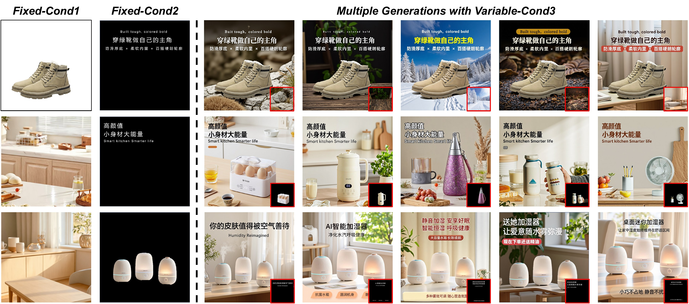
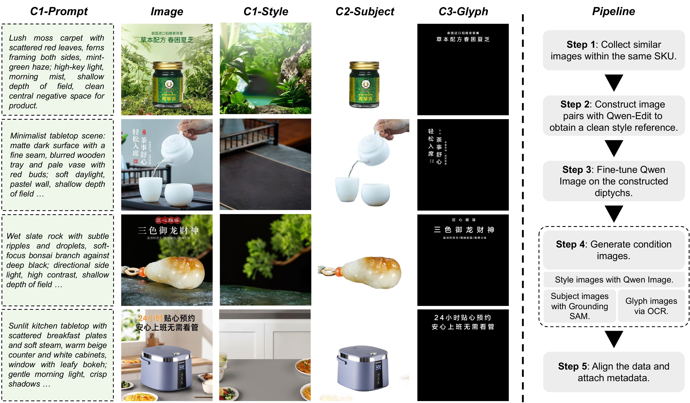
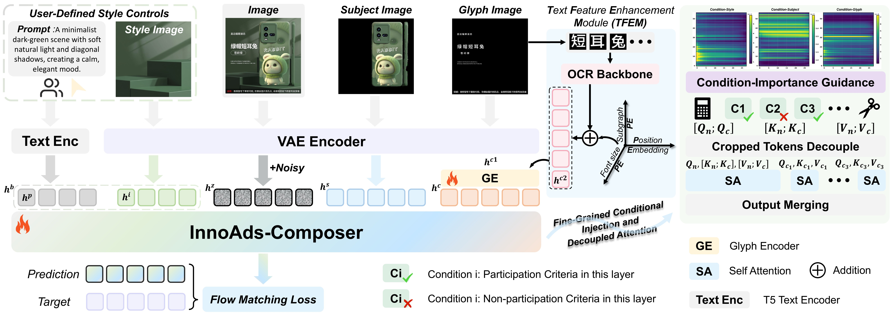
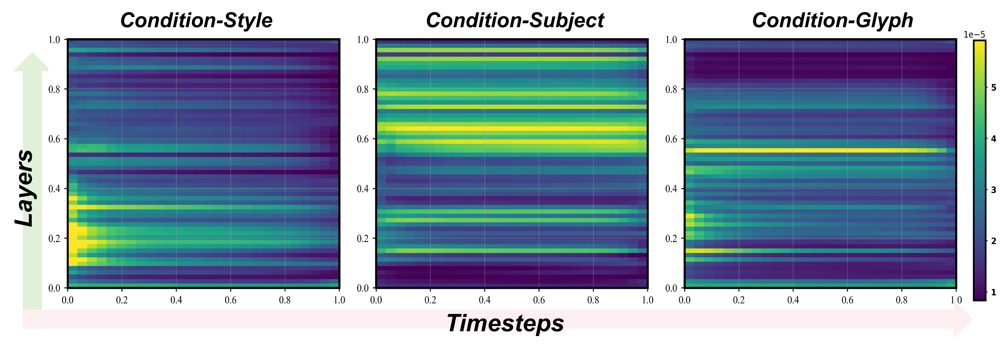
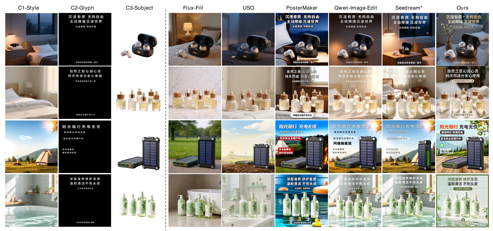
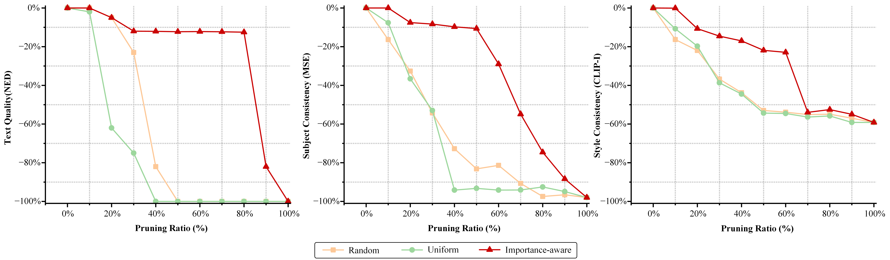

🎮 费曼一分钟
任务：电商海报 = 一张图里同时摆对商品主体、促销文案、背景风格。多阶段 pipeline（先合成场景再贴字）常出现主体走样、文字错字、风格不统一。
InnoAds-Composer：基于 MM-DiT（FLUX） 的单阶段三条件生成——风格 $h^b$、主体 $h^s$、字形 $h^c$ 全部 token 化后注入同一注意力流。
三板斧：① TFEM 双分支（整图 VAE + 单字 OCR crop + 位置编码）提升中文渲染；② 重要性热力图 按层/步只注入「该管事」的条件 token（默认保留 40%/50%/20%）；③ 解耦注意力 砍掉 $Q_c\!\to\!K_n$ 冗余路径，条件支路可跨步缓存。
数据：自建 InnoComposer-80K（首个同时含 subject+glyph+style 标注的海报集）+ 300 条 InnoComposer-Bench。Stage I 质量全面 SOTA；Stage II 剪 token 后延迟再降 15%，指标几乎不掉。
Abstract
E-commerce product poster generation aims to automatically synthesize a single image that effectively conveys product information by presenting a subject, text, and a designed style. Recent diffusion models with fine-grained and efficient controllability have advanced product poster synthesis, yet they typically rely on multi-stage pipelines, and simultaneous control over subject, text, and style remains underexplored. Such naive multi-stage pipelines also show three issues: poor subject fidelity, inaccurate text, and inconsistent style.
To address these issues, we propose InnoAds-Composer, a single-stage framework that enables efficient tri-conditional control tokens over subject, glyph, and style. To alleviate the quadratic overhead introduced by naive tri-conditional token concatenation, we perform importance analysis over layers and timesteps and route each condition only to the most responsive positions, thereby shortening the active token sequence. Besides, to improve the accuracy of Chinese text rendering, we design a Text Feature Enhancement Module (TFEM) that integrates features from both glyph images and glyph crops.
To support training and evaluation, we also construct a high-quality e-commerce product poster dataset and benchmark, which is the first dataset that jointly contains subject, text, and style conditions. Extensive experiments demonstrate that InnoAds-Composer significantly outperforms existing product poster methods without obviously increasing inference latency.
电商产品海报生成旨在自动合成一张图，通过呈现主体、文字与设计风格有效传达产品信息。可控扩散模型虽推动海报合成，但多依赖多阶段 pipeline，且主体、文字、风格的同时控制仍不足； naive 多阶段常出现主体保真差、文字不准、风格不一致。
为此提出 InnoAds-Composer：单阶段框架，对 subject、glyph、style 做高效三条件 token 控制。为缓解 naive 三条件 token 拼接的二次开销，在层与时间步上做重要性分析，将各条件仅路由至最响应位置以缩短有效序列。另设计 TFEM，融合整图字形与单字 crop 特征以提升中文渲染精度。
并构建高质量电商海报数据集与 benchmark——首个同时含 subject、text、style 条件的数据集。实验表明 InnoAds-Composer 显著优于现有方法，且推理延迟未明显增加。
把 PosterMaker / Flux-Text 等多路能力收进一个 MM-DiT 前向，并用「条件重要性 + 解耦注意力」把三条件拼接的 $O(n^2)$ 开销压下去。
📄 Figure 1：三条件独立控制定性展示

1. Introduction
E-commerce product poster generation has emerged as a crucial task that aims to automatically synthesize a single image effectively conveying product information through the integration of subject, text, and a designed style. Recently, diffusion models have demonstrated fine-grained and efficient control over image synthesis; however, e-commerce poster generation remains relatively underexplored. Unlike free-form artistic layouts, retail posters must follow strict layout and branding rules while maintaining subject fidelity, style consistency, and text accuracy.
Current e-commerce poster generation systems still fall short in three respects. First, most do not offer end-to-end joint control of background style, subject fidelity, and text accuracy within a single model; multi-stage pipelines that compose the scene and render the text tend to be inaccurate, resulting in style inconsistency and loss of subject fidelity. Second, emerging single-stage approaches incorporate text control but struggle to render complex scripts and small glyphs with high fidelity. Third, the designed background style is often prompt-driven and may deviate from global style or semantic constraints. These limitations are exacerbated by the scarcity of training data with fine-grained, multi-condition annotations.
To address these challenges, we introduce InnoAds-Composer, a single-stage, multi-condition framework built on an MM-DiT backbone. A unified tokenization maps style, subject, and glyph conditions into the same token space. We propose TFEM with entire-glyph VAE tokens and single-glyph OCR crops with positional cues; conduct layer and timestep importance analysis for importance-aware injection; and use decoupled attention to remove costly low-value interactions. We also create InnoComposer-80K and InnoComposer-Bench.
电商海报生成旨在合成一张图，整合主体、文字与设计风格以传达产品信息。扩散模型虽实现细粒度可控合成，但电商海报仍相对欠探索；与自由艺术布局不同，零售海报须遵守严格布局与品牌规则，同时保持主体保真、风格一致与文字准确。
现有系统在三方面不足：其一，多数无法在单模型内端到端联合控制背景风格、主体保真与文字准确，多阶段 pipeline 易致风格不一致与主体失真；其二，单阶段文字方法难以高保真渲染复杂文字与小字号；其三，背景风格常由 prompt 驱动，易偏离全局风格或语义约束。细粒度多条件标注数据稀缺进一步加剧上述问题。
为此提出基于 MM-DiT 的单阶段多条件框架 InnoAds-Composer：统一 token 化映射 style/subject/glyph；TFEM 融合整图 VAE token 与 OCR 单字 crop 及位置编码；层×步重要性分析做选择性注入；解耦注意力去除低价值交互。并发布 InnoComposer-80K 与 InnoComposer-Bench。
PosterMaker 用 prompt 控背景；本文用 风格参考图 $h^i$（或纯 prompt 模式 $m{=}0$）。与 Lay2Story / FancyVideo 同 JD 系，但任务是静态海报三条件而非视频/故事。
3. Datasets & Benchmark
We construct a high-quality bilingual e-commerce poster dataset through a structured pipeline. Each sample comprises three customized inputs: a background-style image conveying global aesthetics, a subject image specifying the product and its approximate location, and a glyph image providing the textual content to be rendered.
Images are grouped by SKU; annotators select visually similar pairs within each group. For one image in each pair, Qwen-Edit removes product content to obtain a clean style reference. The reference and its paired image form a diptych to fine-tune Qwen-Image, yielding clean background references. We synthesize style images in batches; unlike pipelines enforcing tight pixel-level match, our backgrounds are semantically aligned yet intentionally differ in local details. Glyph images (Chinese and English) are extracted via OCR; subjects are segmented with Grounded-SAM. After de-duplication and resolution normalization, we construct InnoComposer-80K (80,000 samples: prompt, subject, style, glyph). For evaluation, InnoComposer-Bench contains 300 held-out items ranked by product emphasis, style consistency, and text accuracy.
通过结构化 pipeline 构建高质量双语电商海报数据集。每条样本含三输入：背景风格图（全局美学）、主体图（商品及大致位置）、字形图（待渲染文字内容）。
按 SKU 分组，组内选视觉相似对；Qwen-Edit 去除其中一张的商品得干净风格参考，与配对图组成 diptych 微调 Qwen-Image 得背景参考；批量合成风格图——语义对齐但局部细节刻意不同。OCR 提取中英字形图，Grounded-SAM 分割主体；去重与分辨率归一化后得 InnoComposer-80K（8 万条：prompt+subject+style+glyph）。InnoComposer-Bench 为 300 条严格留出样本，按商品强调、风格一致、文字准确排序。
风格图与内容图故意不做像素级对齐，只要求语义一致 → 训练时模型学「风格迁移」而非 copy-paste。中英双语 OCR 字形 → 对齐国内电商主战场。
📄 Figure 2：样例与数据构建流水线

4. Method
InnoAds-Composer adopts unified multi-condition tokenization on an MM-DiT backbone. A T5 encoder embeds the user prompt into text tokens $h^p$; the VAE encodes noise latents into patch tokens $h^z$.
Background style (Eq.1): $h^b = \mathcal{C}(h^p)$ if no style image ($m{=}0$); else $h^b = \mathcal{C}(h^i, h^{p_0})$ where $h^{p_0}$ is a fixed anchor prompt.
Subject: non-subject regions are filled with black; the masked image is VAE-encoded and patchified into $h^s$.
Glyph + TFEM (Eq.2): branch 1 encodes the entire glyph image → $h^{c1}$; branch 2 processes single-glyph OCR crops with absolute position, font-size code, and local position → $h^{c2}$; $h^c = \mathrm{GlyphEnc}(h^{c1}, h^{c2})$.
InnoAds-Composer 在 MM-DiT 骨干上采用统一多条件 token 化：T5 将用户 prompt 嵌入为 $h^p$；VAE 将噪声 latent patch 化为 $h^z$。
背景风格（Eq.1）：无风格图（$m{=}0$）时 $h^b = \mathcal{C}(h^p)$；有风格图时 $h^b = \mathcal{C}(h^i, h^{p_0})$，$h^{p_0}$ 为固定锚 prompt。
主体：非主体区域填黑，mask 后 VAE 编码 patch 化为 $h^s$。
字形 + TFEM（Eq.2）：支路 1 整图字形 VAE → $h^{c1}$；支路 2 单字 OCR crop 加绝对位置、字号码、局部位置 → $h^{c2}$；$h^c = \mathrm{GlyphEnc}(h^{c1}, h^{c2})$。
Cross-Attention 融合：$h^c = \mathrm{softmax}(h^{c1}W_Q (h^{c2}W_K)^\top / \sqrt{d})(h^{c2}W_V) + h^{c1}$，再 LayerNorm+FFN。整图管布局/笔画连贯，单字管语义与字号。
📄 Figure 3：InnoAds-Composer 总览

Importance-Aware Injection: guided by importance curves, we retain by default 40% of style tokens, 50% of subject tokens, and 20% of glyph tokens. In selected layers, corresponding condition tokens are concatenated with noisy-latent tokens $h^z$; non-selected tokens are omitted at that layer.
Decoupled Attention (Eq.3–5): $O_n = \mathrm{Attn}(Q_n, [K_n; K_{ci}], [V_n; V_{ci}])$; $O_{ci} = \mathrm{Attn}(Q_c, K_{ci}, V_{ci})$ — removing the $Q_c \!\to\! K_n$ pathway. Condition activations at each block can be computed once and cached across timesteps during inference.
Two-Stage Training: Stage I retains all condition tokens to train a fully conditioned generator; Stage II removes selected tokens and fine-tunes, sampling timesteps in proportion to the global importance map.
重要性感知注入：依重要性曲线，默认保留 40% 风格 token、50% 主体 token、20% 字形 token。在选定层将对应条件 token 与噪声 latent $h^z$ 拼接，未选层省略该条件 token。
解耦注意力（Eq.3–5）：$O_n = \mathrm{Attn}(Q_n, [K_n; K_{ci}], [V_n; V_{ci}])$；$O_{ci} = \mathrm{Attn}(Q_c, K_{ci}, V_{ci})$——去除 $Q_c \!\to\! K_n$ 路径。推理时各 block 条件激活可一次计算并跨步缓存。
两阶段训练：Stage I 保留全部条件 token 训练完整生成器；Stage II 移除选定 token 并微调，按全局重要性图比例采样 diffusion timestep。
RelaCtrl 按条件类型做层选择；本文进一步做层×时间步二维热力图，且三类条件互补（风格早、主体中、字形晚）。解耦注意力类似 FullDiT2「条件演化慢」观察。
flowchart LR
subgraph tok [Tokenization]
S[Style h^b] --> MM
Sub[Subject h^s] --> MM
G[Glyph h^c via TFEM] --> MM
Z[Noise h^z] --> MM
P[Prompt h^p] --> MM
end
subgraph inj [Importance Injection]
MM[MM-DiT blocks] --> L{layer x timestep heatmap}
L -->|40% style early| MM
L -->|50% subject mid| MM
L -->|20% glyph late| MM
end
subgraph attn [Decoupled Attn]
MM --> On[O_n attends K_n + K_ci]
MM --> Oci[O_ci self-attn only]
Oci -.cache across t.-> On
end
4.2 Conditions Importance Analysis
We measure condition importance via attention preference weights. At layer $b$ and timestep $t$, $A^{(b,t)} = \mathrm{Softmax}(Q^{(b,t)} {K^{(b,t)}}^\top / \sqrt{d})$. For each condition $ci$, we extract its subgraph, apply the condition mask, and compute the mean to obtain $S_{ci}(b,t)$.
From the heatmaps (Fig.4): background style dominates in early layers and early timesteps but decays rapidly. The subject condition forms a persistent high-intensity band in mid-to-deep layers across most timesteps. The glyph condition gradually increases in intensity in middle layers and later timesteps, corresponding to stroke refinement. The conditions display a non-uniform and complementary relationship across timesteps and model depth.
通过注意力偏好权重度量条件重要性。在层 $b$、步 $t$，$A^{(b,t)} = \mathrm{Softmax}(Q^{(b,t)} {K^{(b,t)}}^\top / \sqrt{d})$。对各条件 $ci$ 提取子图、加 mask 取均值得 $S_{ci}(b,t)$。
热力图（Fig.4）显示：背景风格在早期层与早期步主导但快速衰减；主体在中深层形成贯穿多数步的高强度带；字形在中层与后期步强度渐升，对应笔画细化。三条件在时间步与深度上呈非均匀且互补关系。
Random / Uniform 剪枝指标陡降；Importance-aware 在 glyph 剪至 80%、subject 50%、style 60% 前仍平稳——故默认保留比例取保守侧。
📄 Figure 4：三条件重要性热力图

5. Experiments
Table presents quantitative comparison. In Stage I, our method achieves the best performance in nearly all aspects: Sen. Acc 0.857, NED 0.976, DINO 0.923, IoU 0.972, CSD 0.729, IR-Score 1.036, FID 54.39. After Stage II, performance remains competitive (Sen. Acc 0.847, DINO 0.914, FID 55.24) while improving efficiency via importance-aware token routing.
| Model | Sen.Acc↑ | NED↑ | DINO↑ | IoU↑ | CSD↑ | FID↓ |
|---|---|---|---|---|---|---|
| PosterMaker | 0.765 | 0.848 | 0.916 | 0.954 | — | 60.55 |
| Qwen-Image-Edit | 0.831 | 0.960 | 0.922 | 0.903 | 0.722 | 69.86 |
| Seedream 4.0* | 0.865 | 0.972 | 0.864 | 0.837 | 0.700 | 64.21 |
| Ours Stage I | 0.857 | 0.976 | 0.923 | 0.972 | 0.729 | 54.39 |
| Ours Stage II | 0.847 | 0.969 | 0.914 | 0.960 | 0.727 | 55.24 |
Leveraging decoupled attention, Stage I reduces latency by 26.5% and FLOPs by 24.2% vs Flux-Kontext. Stage II achieves further reductions of 37.8% in latency and 38.1% in FLOPs without compromising generation quality.
| Method | Latency (s) | FLOPs (T) | Memory (G) |
|---|---|---|---|
| Flux-Kontext | 76.02 | 218.45 | 55.29 |
| Ours Stage I | 55.87 | 165.56 | 39.71 |
| Ours Stage II | 47.32 | 135.25 | 39.41 |
Stage I 在几乎所有维度最优：Sen.Acc 0.857、NED 0.976、DINO 0.923、IoU 0.972、CSD 0.729、IR-Score 1.036、FID 54.39。Stage II 经重要性路由剪 token 后指标略降（Sen.Acc 0.847、DINO 0.914、FID 55.24）仍具竞争力。
| 模型 | Sen.Acc↑ | NED↑ | DINO↑ | IoU↑ | CSD↑ | FID↓ |
|---|---|---|---|---|---|---|
| PosterMaker | 0.765 | 0.848 | 0.916 | 0.954 | — | 60.55 |
| Qwen-Image-Edit | 0.831 | 0.960 | 0.922 | 0.903 | 0.722 | 69.86 |
| Seedream 4.0* | 0.865 | 0.972 | 0.864 | 0.837 | 0.700 | 64.21 |
| Ours Stage I | 0.857 | 0.976 | 0.923 | 0.972 | 0.729 | 54.39 |
| Ours Stage II | 0.847 | 0.969 | 0.914 | 0.960 | 0.727 | 55.24 |
解耦注意力使 Stage I 相对 Flux-Kontext 延迟降 26.5%、FLOPs 降 24.2%；Stage II 再降延迟 37.8%、FLOPs 38.1%，生成质量未明显受损。
| 方法 | 延迟 (s) | FLOPs (T) | 显存 (G) |
|---|---|---|---|
| Flux-Kontext | 76.02 | 218.45 | 55.29 |
| Ours Stage I | 55.87 | 165.56 | 39.71 |
| Ours Stage II | 47.32 | 135.25 | 39.41 |
基于 FLUX + AutoPP1M 中文先验；InnoComposer-80K 两阶段 LoRA rank 256。Stage I：lr $2\times10^{-5}$，≈1.1k GPU·h；Stage II：lr $1\times10^{-6}$，≈100 GPU·h；800²，Ascend 910B 训练、A100 测速。Sen.Acc 闭源 Seedream 0.865 仍略高于 Stage I 0.857。
文字：Sen.Acc / NED；主体：DINO + IoU（Grounded-SAM 抠区域）；风格：CSD + CLIP-I；整体：IR-Score + FID。
📄 Figure 5：与基线定性对比

Flux-Fill and USO cannot generate visual text, making them unsuitable for poster scenarios requiring integrated textual elements. PosterMaker generates subject and text but struggles to maintain background style consistency. Qwen-Image-Edit and Seedream 4.0 show good subject consistency and text rendering, yet often produce redundant or mismatched text, and style transfer tends to exhibit a copy-and-paste effect. InnoAds-Composer achieves strong consistency across text, subject, and background style.
Ablation on TFEM: without it, generated images exhibit noticeable textual errors; incorporating it improves rendered text quality, with an approximate 5% improvement in Sen. Acc (Fig.7).
Flux-Fill 与 USO 无法生成视觉文字，不适于需整合文字的海报场景。PosterMaker 可生成主体与文字但难保持背景风格一致。Qwen-Image-Edit 与 Seedream 4.0 主体与文字较好，但常出现冗余或不匹配文字，风格迁移易呈 copy-paste 效果。InnoAds-Composer 在文字、主体、背景风格上均强一致。
TFEM 消融：无 TFEM 时文字错误明显；加入后渲染质量提升，Sen.Acc 约提高 5%（Fig.7）。
Random / Uniform 剪枝指标陡降；Importance-aware 在 glyph 剪至 80%、subject 50%、style 60% 前仍平稳——故默认保留 40/50/20%。
📄 Figure 6–7：剪枝策略 & TFEM 消融

6. Conclusion
We presented InnoAds-Composer, a single-stage, multi-condition framework for e-commerce poster generation that delivers simultaneously subject, text, and designed style. By unifying subject, style, and glyph tokens in the same space and preserving the priors of an MM-DiT backbone, our approach enables joint inference without multi-stage pipelines. The proposed TFEM fuses single/entire glyphs with positional information, substantially improving text sharpness, boundary integrity, and readability. Complementing this, we perform importance-aware condition injection and decoupled attention to reduce redundant interactions and shorten the activated sequence, leading to improved inference efficiency. We constructed InnoComposer-80K and InnoComposer-Bench for learning and fair comparison.
我们提出 InnoAds-Composer：单阶段多条件电商海报框架，同时交付主体、文字与设计风格。在 MM-DiT 骨干上统一 subject/style/glyph token 并保留先验，实现无多阶段 pipeline 的联合推理。TFEM 融合单字/整图字形与位置信息，显著提升文字锐度、边界完整性与可读性。另通过重要性感知注入与解耦注意力减少冗余交互、缩短激活序列，提升推理效率。并构建 InnoComposer-80K 与 InnoComposer-Bench 以支持训练与公平对比。
无公开代码/权重（截至 2026）；800² 固定分辨率；重要性图依赖 Stage I 全模型 profiling；闭源 Seedream 在 Sen.Acc 仍略高。
符号速查表
| 符号 | 含义 |
|---|---|
| $h^p, h^z$ | T5 文本 token / 噪声 latent patch token |
| $h^b, h^s, h^c$ | 风格 / 主体 / 字形条件 token |
| $h^{c1}, h^{c2}$ | TFEM 整图 VAE 支路 / 单字 OCR 支路 |
| $S_{ci}(b,t)$ | 条件 $ci$ 在层 $b$、步 $t$ 的重要性分数 |
| TFEM | Text Feature Enhancement Module |
| Stage I / II | 全 token 训练 / 重要性剪枝微调 |
| InnoComposer-80K | 8 万海报四元组（prompt+subject+style+glyph） |
论证总览
↓
单阶段 MM-DiT：异构条件统一 token 化（Eq.1–2）
↓
瓶颈：三条件拼接 → 序列变长 → 注意力 $O(n^2)$
↓
层×步重要性分析（Fig.4）→ 选择性注入（40/50/20%）
↓
解耦注意力：去 $Q_c\!\to\!K_n$ + 条件缓存（Eq.3–5）
↓
两阶段训练：Stage I 能力上限 → Stage II 剪枝不掉点
↓
InnoComposer-80K 监督 + Bench 评测 → Tab.1 SOTA + Tab.2 −38% 延迟
🧩 结构化十问（AI 解构）
Q1 · 这篇论文要解决什么问题？
Q2 · 核心创新点是什么？
Q3 · 与 PosterMaker / Qwen-Image-Edit 有何不同？
Q4 · TFEM 为什么需要两路字形？
Q5 · 重要性分数怎么算？
Q6 · 解耦注意力省在哪里？
Q7 · 两阶段训练各自做什么？
Q8 · 数据怎么来的？可信吗？
Q9 · 实验说明方法有效吗？
Q10 · 复现/落地还要什么？
🔬 深挖
条件互补的时间结构（读 Fig.4）
可把它记成「先布景 → 摆商品 → 描字」：风格在浅层+早期噪声定调；主体在中层贯穿防商品走形；字形在中后期才需要精细注意力——这与人类设计师 workflow 同构，也解释了为何 uniform 注入浪费算力。
与 OminiControl2 / FullDiT2 的效率哲学
OminiControl2：跨步复用条件特征；FullDiT2：动态 token 选择。本文二者兼有（缓存 + 重要性路由），且针对三种语义不同的条件分别建模，比单一 context 选择更贴海报任务。
批判性思维 · 尚未回答的问题
- Seedream gap：闭源 Sen.Acc 0.865 仍高于 Stage I 0.857——商业模型是否用了更大规模 RLHF/人工审美数据？
- 重要性迁移性：热力图来自固定 FLUX 深度；换 SD3/Wan 是否需重 profiling？
- 布局泛化：glyph image 是 OCR 提取的「目标排版」——真实应用若只给字符串无 layout 图怎么办？
- 数据闭环：风格图由 Qwen-Image 合成，评测又比 Qwen-Edit——需更多纯真实海报 held-out 验证。
- 40/50/20 敏感性：ablation 给的是剪枝曲线，缺连续 Pareto（latency vs Sen.Acc）公开表。